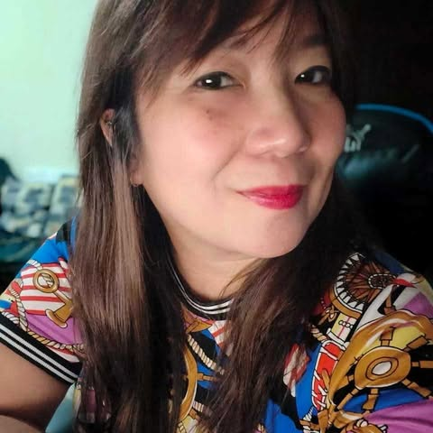
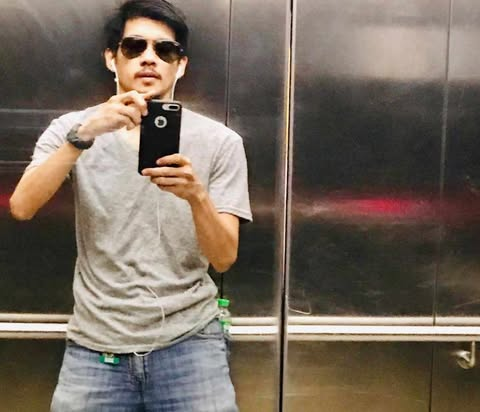
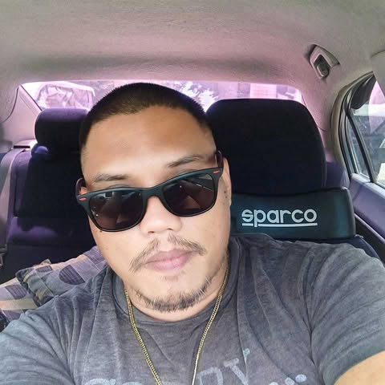
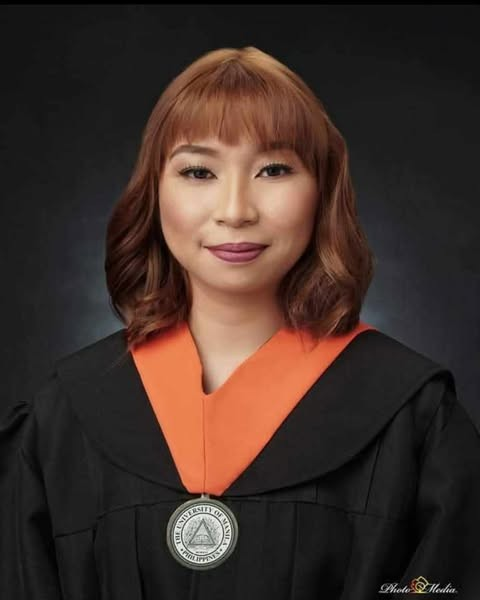

My Family
This is my family, some of them aren't in the picture. I'll tell you about each one of them.

My Mother
She's my mother, my rock, my admiration. She works very hard and supports us. She will always greet us with a warm smile. Her name is Hiyas Chiongson, and she's 41 years old.
My Fathers
Biological Father
This is my biological father. My mom and he divorced when I was young. He's a strong, brave man. His name is Christiann Lopez, and he's 46 years old.
Stepfather
He is my stepdad. Even though we aren't related by blood, he treated me as his own. Even though sometimes we quarrel, he has always been there. His name is Adolf Del Carmen, and he's 38 years old.
My Siblings
Angeluv Tatiana C. Chiongson
She is the firstborn. I don't remember much about her, but we are still in contact. She left home for high school. She is a lovely, kind girl and the quiet one among us. She is 22 years old and has graduated from college.
Alyssa Chelsea C. Lopez
She's the stubborn one, the rebel child, I suppose? She is the second child, but she still has warmth in her heart. We always used to fight when we were kids, but she chose to stay with my biological dad.
Alexandra Hencey C. DelCarmen
She is my little sister. We're half-sisters, but I treat her like my own real sister. She is a cute, active child who always laughs. Fun fact about her name: "Hencey" was supposed to be "Hennesey," but my grandmother said it was too long and that she might have difficulty writing her name in the future.